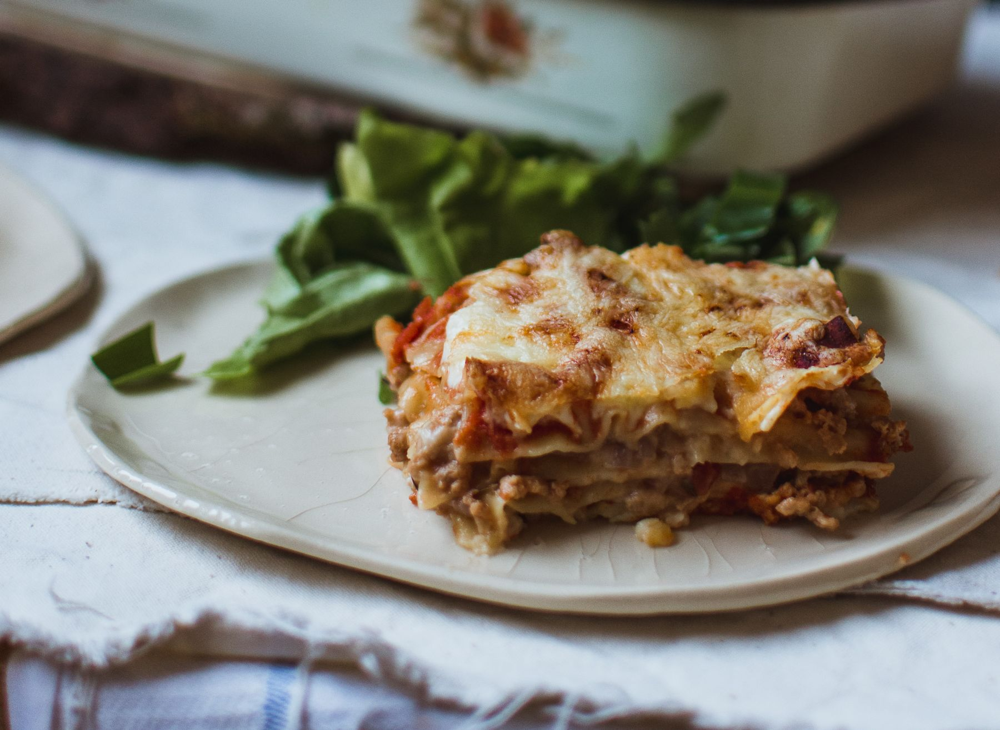

Lasagna

This is just an illustrative soy lasagne. However, something similar is possible to come about
The ones I bough are not seasoned so you can really add the flavors you want to them. So this is a joker card I pull out of the sleeve when I need to put my “convincing pants on” when cooking for nonbelievers.